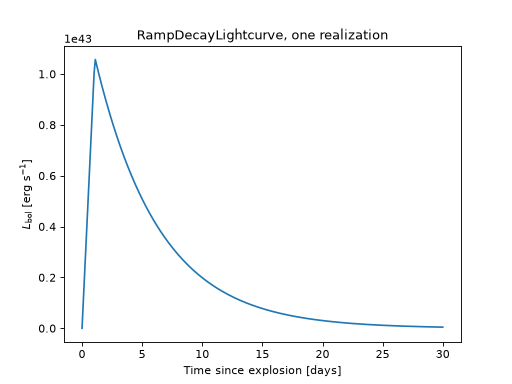
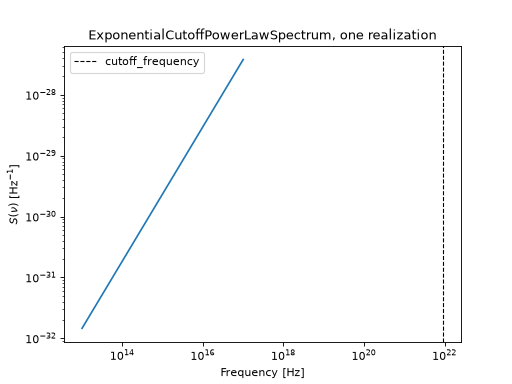
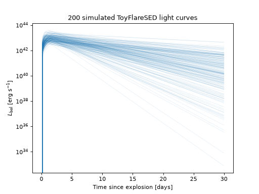

Writing a Custom Model#
The previous page covered everything you do with a model: create one, evaluate it, sample
from it. This page covers how to build one. If uvex_transients.models does not already
have the physics you need, whether that is a new light curve shape, a new spectral shape, or an
entirely new kind of photosphere, this is how you add it.
Every model in the package, no matter how complicated, comes down to the same two pieces: a
function of some physical inputs, and a named set of parameters that function depends on. The
base classes described in Models (and in the
uvex_transients.models.core.base module docstring) handle everything around that function:
parameter storage, sampling, unit conversion, the _log_cgs/_log/_cgs/plain method
family, bolometric integration, redshifting, magnitudes. You supply the function itself, as a
single method named _eval.
We will build a small toy transient over the course of this page: a light curve with a linear rise and an exponential decay, an exponentially cut off power-law spectrum, and the composite SED that comes from putting the two together. None of it is meant to describe a real astrophysical source. It exists so every step can be checked against a plot as we go.
Choosing What to Subclass#
There are four base classes to choose from, and the right one depends on what your model actually depends on.
Base class |
Depends on |
Use it when |
|---|---|---|
\(t\) only |
You are describing how the total (frequency-integrated) brightness evolves with time, with no opinion about color. |
|
\(\nu\) only |
You are describing the shape of the spectrum at a single instant, with no opinion about how bright the source is or how that shape changes over time. |
|
a |
Your source has a fixed spectral shape that just gets scaled up and down in brightness as it evolves. This covers most physically motivated SEDs and is the one you should reach for first. |
|
\(\nu\) and \(t\) jointly |
The spectral shape itself changes over time, so it cannot be factored into an independent
brightness curve and an independent color. A cooling blackbody, where the temperature (and
therefore the whole shape of the spectrum) evolves with \(t\), is the running example
of this in the package: |
Most of this page builds a Lightcurve and a Spectrum and composes them. The last worked
example shows what it looks like to subclass SpectralModel directly, for the cases where
composition is not enough.
The One Method You Have to Write: _eval#
Whichever base class you subclass, the contract for _eval is the same in spirit:
It is a
classmethod, not an instance method. Every quantity a model produces is a pure function of the parameter values you pass it, so no model instance is needed to evaluate it (only to store a particular configuration of parameters for later sampling).Its inputs and output are unit-stripped, plain
numpy.ndarrayobjects, always in cgs units (seconds, Hz, erg/s, Kelvin, and so on).It returns a natural log, not the quantity itself.
Inputs combine by ordinary NumPy broadcasting. Nothing inserts a “batch” or “sample” axis for you; if you want to evaluate several parameter realizations against a shared time or frequency grid, you reshape the arrays yourself, exactly as the overview page’s population example does with a trailing
[:, None].
Working in log space is not a stylistic choice. Bolometric luminosities span tens of orders of
magnitude across a population, and many of the shapes in this package (power laws, blackbodies,
exponential tails) are most naturally written as sums of logs rather than products of very large
or very small numbers. Every public method built on top of _eval (eval, eval_cgs,
mag, and the rest) handles converting back to linear space, attaching units, and validating
inputs, so _eval itself can stay a short, exact expression.
Declaring Parameters#
A model’s parameters are declared once, as a class-level dict of
Parameter objects:
from astropy import units as u
from uvex_transients.models.core import Parameter, LogNormalPrior
_DEFAULT_PARAMETERS = {
"amplitude": Parameter(
prior=LogNormalPrior(mean=0.0, sigma=0.5),
scale=1e43 * u.erg / u.s,
description="Peak bolometric luminosity.",
latex=r"A",
),
}
Three fields matter most:
priorWhere random draws come from. The built-ins in
uvex_transients.models.core.priorscover the common cases:UniformPrior,NormalPrior,LogNormalPrior,TruncatedNormalPrior,ExponentialPrior,PowerLawPrior,ConstantPrior(for a parameter that should behave as fixed unless someone overrides it), andDiscretePrior.scaleThe characteristic physical size of the parameter, as a
Quantity(or a bare number for a genuinely dimensionless parameter). Every physical value is divided byscalebefore the prior sees it, which is what letsprioritself be written in convenient, unit-free terms rather than needing to know about days versus seconds or erg/s versus solar luminosities.transformAn optional reparameterization applied on top of
scale, most often"log"or"log10". A strictly positive, many-orders-of-magnitude quantity (an amplitude, a temperature) samples much better from a Gaussian prior on its logarithm than from a Gaussian prior on the value itself;transform="log10"is exactly howamplitudeandT0are handled inKilonovaCoolingBlackbodySED.
description and latex are optional but worth filling in: the former shows up in
__repr__() and generated docs, the latter in
plot labels built from the model automatically.
Inside _eval, parameters arrive as plain keyword arguments, already unit-stripped and in cgs
(so amplitude above arrives as a bare float in erg/s, not a Quantity). You can either
accept them generically through **parameters and index into the dict, or narrow the signature
to your model’s own named parameters, which is the pattern used throughout the package itself
(see any of the _eval overrides in uvex_transients.models.lightcurves.generic) because
it lets a type checker and your editor catch a misspelled parameter name.
A Custom Light Curve, From Scratch#
Suppose the flare shapes already in uvex_transients.models.lightcurves do not fit: we want
a light curve that rises linearly from zero, peaks at t_peak, and then decays exponentially
with timescale tau_decay.
Both branches agree at \(t = t_\mathrm{peak}\), where \(L = A\) exactly. Here is the whole class:
from typing import ClassVar
import numpy as np
from astropy import units as u
from uvex_transients.models.core import Lightcurve, LogNormalPrior, Parameter
from uvex_transients.models._typing import CGSParameterValue, FloatArray
from uvex_transients.models._utils import _BOL_LUM_UNIT
class RampDecayLightcurve(Lightcurve):
r"""A linear rise to `t_peak`, followed by an exponential decay."""
_DEFAULT_PARAMETERS: ClassVar[dict[str, Parameter]] = {
"amplitude": Parameter(
prior=LogNormalPrior(mean=0.0, sigma=0.5),
scale=1e43 * _BOL_LUM_UNIT,
description="Peak bolometric luminosity.",
latex=r"A",
),
"t_peak": Parameter(
prior=LogNormalPrior(mean=0.0, sigma=0.5),
scale=1.0 * u.day,
description="Time of peak luminosity since explosion.",
latex=r"t_\mathrm{peak}",
),
"tau_decay": Parameter(
prior=LogNormalPrior(mean=0.0, sigma=0.5),
scale=5.0 * u.day,
description="Exponential decay timescale past t_peak.",
latex=r"\tau_\mathrm{decay}",
),
}
@classmethod
def _eval(cls, t: FloatArray, **parameters: CGSParameterValue) -> FloatArray:
amplitude = parameters["amplitude"]
t_peak = parameters["t_peak"]
tau_decay = parameters["tau_decay"]
# `t_peak` is strictly positive by its prior's support, so `t = 0`
# always falls on the rising branch: log(0 / t_peak) = -inf is the
# correct limit there, not an error.
with np.errstate(divide="ignore"):
log_rise = np.log(t / t_peak)
log_decay = -(t - t_peak) / tau_decay
return np.log(amplitude) + np.where(t <= t_peak, log_rise, log_decay)
A few things worth pointing out about this class, because they generalize to every model you write:
_evalnever touches units.t,amplitude,t_peak, andtau_decayare all plain floats in seconds or erg/s by the time they reach it; the base class handled the conversion ineval_log().The branch that is discarded at each
tis allowed to be numerically ugly (here, a divide warning att = 0), as long as it is masked out bynumpy.where()before it reaches the caller. Suppressing the warning explicitly, with a comment explaining why it is expected, is the convention used everywhere else in the package.There is no
__init__to write. Parameter storage, copying, theMappinginterface, and sampling all come from_ModelBase.
Once defined, it behaves exactly like any built-in light curve:
import numpy as np
import matplotlib.pyplot as plt
from astropy import units as u
from uvex_transients.models.core import Lightcurve, LogNormalPrior, Parameter
from uvex_transients.models._typing import CGSParameterValue, FloatArray
from uvex_transients.models._utils import _BOL_LUM_UNIT
class RampDecayLightcurve(Lightcurve):
_DEFAULT_PARAMETERS = {
"amplitude": Parameter(
prior=LogNormalPrior(mean=0.0, sigma=0.5), scale=1e43 * _BOL_LUM_UNIT,
),
"t_peak": Parameter(prior=LogNormalPrior(mean=0.0, sigma=0.5), scale=1.0 * u.day),
"tau_decay": Parameter(prior=LogNormalPrior(mean=0.0, sigma=0.5), scale=5.0 * u.day),
}
@classmethod
def _eval(cls, t: FloatArray, **parameters: CGSParameterValue) -> FloatArray:
amplitude, t_peak, tau_decay = (
parameters["amplitude"], parameters["t_peak"], parameters["tau_decay"],
)
with np.errstate(divide="ignore"):
log_rise = np.log(t / t_peak)
log_decay = -(t - t_peak) / tau_decay
return np.log(amplitude) + np.where(t <= t_peak, log_rise, log_decay)
lc = RampDecayLightcurve()
params = lc.sample_parameters(rng=0)
t = np.linspace(0, 30, 300) * u.day
L_bol = lc.eval(t, **params)
plt.plot(t.to_value(u.day), L_bol.to_value(u.erg / u.s))
plt.xlabel("Time since explosion [days]")
plt.ylabel(r"$L_\mathrm{bol}$ [erg s$^{-1}$]")
plt.title("RampDecayLightcurve, one realization")
(Source code, png, hires.png, pdf)
{kind=link}
{kind=link}

A Custom Spectral Shape, From Scratch#
A Spectrum follows the same pattern as a
Lightcurve, but over frequency instead of time, and with one extra piece: because
\(S(\nu)\) need not integrate to any particular value by construction,
eval_normalization() has to know what
\(\int S(\nu)\,d\nu\) actually is. By default it finds that out the expensive way, by
numerically integrating your _eval over the frequency range given by the class’s _DOMAIN
attribute. If your shape has a closed-form integral, override
_eval_normalization() yourself, both for speed
and to avoid any quadrature error; BlackbodySpectrum
and PowerLawSpectrum both do this. If it does
not, the default is there to fall back on, and correctness costs you nothing beyond evaluation
speed.
Here we build a power law with an exponential cutoff, a common shape for the high-frequency tail of a nonthermal spectrum, and lean on the numerical default rather than deriving a closed form:
from typing import ClassVar
import numpy as np
from astropy import units as u
from uvex_transients.models.core import NormalPrior, LogNormalPrior, Parameter, Spectrum
from uvex_transients.models._typing import CGSParameterValue, FloatArray
class ExponentialCutoffPowerLawSpectrum(Spectrum):
r"""A power law that turns over exponentially above `cutoff_frequency`."""
_DEFAULT_PARAMETERS: ClassVar[dict[str, Parameter]] = {
"spectral_index": Parameter(
prior=NormalPrior(mean=1.0, sigma=0.3),
scale=1.0,
description="Frequency-space power-law index below the cutoff.",
latex=r"\alpha",
),
"cutoff_frequency": Parameter(
prior=LogNormalPrior(mean=0.0, sigma=0.3),
scale=1e15 * u.Hz,
description="Frequency above which the spectrum turns over exponentially.",
latex=r"\nu_\mathrm{cut}",
),
}
@classmethod
def _eval( # type: ignore[override]
cls, nu: FloatArray, *, spectral_index: CGSParameterValue, cutoff_frequency: CGSParameterValue
) -> FloatArray:
x = nu / cutoff_frequency
with np.errstate(divide="ignore"):
log_shape = spectral_index * np.log(x) - x
return log_shape - np.log(cutoff_frequency)
We keep spectral_index centered above \(-1\), so the shape stays integrable as
\(\nu \to 0\); the exponential factor already takes care of the high-frequency end.
_eval_normalization is left untouched, so it falls back to numerical quadrature over the
default domain, (0, inf) Hz, the first time it is needed:
import numpy as np
import matplotlib.pyplot as plt
from astropy import units as u
from uvex_transients.models.core import NormalPrior, LogNormalPrior, Parameter, Spectrum
from uvex_transients.models._typing import CGSParameterValue, FloatArray
class ExponentialCutoffPowerLawSpectrum(Spectrum):
_DEFAULT_PARAMETERS = {
"spectral_index": Parameter(prior=NormalPrior(mean=1.0, sigma=0.3), scale=1.0),
"cutoff_frequency": Parameter(
prior=LogNormalPrior(mean=0.0, sigma=0.3), scale=1e15 * u.Hz,
),
}
@classmethod
def _eval(cls, nu: FloatArray, *, spectral_index, cutoff_frequency) -> FloatArray:
x = nu / cutoff_frequency
with np.errstate(divide="ignore"):
log_shape = spectral_index * np.log(x) - x
return log_shape - np.log(cutoff_frequency)
spec = ExponentialCutoffPowerLawSpectrum()
spec["cutoff_frequency"].fix(3000 * u.AA.to(u.Hz, equivalencies=u.spectral()) * u.Hz)
params = spec.sample_parameters(rng=1)
nu = np.geomspace(1e13, 1e17, 300) * u.Hz
S = spec.eval(nu, **params)
plt.plot(nu.to_value(u.Hz), S.to_value(1 / u.Hz))
plt.xscale("log")
plt.yscale("log")
plt.xlabel(r"Frequency [Hz]")
plt.ylabel(r"$S(\nu)$ [Hz$^{-1}$]")
plt.title("ExponentialCutoffPowerLawSpectrum, one realization")
plt.axvline(
spec["cutoff_frequency"].fixed_value.value, color="k", ls="--", lw=1, label="cutoff_frequency",
)
plt.legend()
(Source code, png, hires.png, pdf)
{kind=link}
{kind=link}

Combining Them Into a Full SED#
With a Lightcurve and a Spectrum in hand, building the full
\(L_\nu(\nu, t)\) model is just naming the two component classes:
from typing import ClassVar
from uvex_transients.models.core import ComposedSpectralModel
class ToyFlareSED(ComposedSpectralModel):
_LIGHTCURVE_CLASS: ClassVar = RampDecayLightcurve
_SPECTRUM_CLASS: ClassVar = ExponentialCutoffPowerLawSpectrum
No _eval to write this time. At class-definition time,
__init_subclass__() merges the two
components’ _DEFAULT_PARAMETERS dicts into one flat namespace (checking that no parameter name
is shared between them), and every method your model needs,
_eval(),
_eval_bolometric(), and
_eval_spectrum(), is built out of exact,
closed-form combinations of the light curve’s and spectrum’s own primitives. None of the
numerical-quadrature fallbacks on SpectralModel itself are ever reached for a composed model.
From here, ToyFlareSED behaves exactly like
KilonovaCoolingBlackbodySED did on the overview
page: sample parameters, evaluate, plot a population.
import numpy as np
import matplotlib.pyplot as plt
from astropy import units as u
from uvex_transients.models.core import (
ComposedSpectralModel, Lightcurve, LogNormalPrior, NormalPrior, Parameter, Spectrum,
)
from uvex_transients.models._typing import CGSParameterValue, FloatArray
from uvex_transients.models._utils import _BOL_LUM_UNIT
class RampDecayLightcurve(Lightcurve):
_DEFAULT_PARAMETERS = {
"amplitude": Parameter(
prior=LogNormalPrior(mean=0.0, sigma=0.5), scale=1e43 * _BOL_LUM_UNIT,
),
"t_peak": Parameter(prior=LogNormalPrior(mean=0.0, sigma=0.5), scale=1.0 * u.day),
"tau_decay": Parameter(prior=LogNormalPrior(mean=0.0, sigma=0.5), scale=5.0 * u.day),
}
@classmethod
def _eval(cls, t: FloatArray, **parameters: CGSParameterValue) -> FloatArray:
amplitude, t_peak, tau_decay = (
parameters["amplitude"], parameters["t_peak"], parameters["tau_decay"],
)
with np.errstate(divide="ignore"):
log_rise = np.log(t / t_peak)
log_decay = -(t - t_peak) / tau_decay
return np.log(amplitude) + np.where(t <= t_peak, log_rise, log_decay)
class ExponentialCutoffPowerLawSpectrum(Spectrum):
_DEFAULT_PARAMETERS = {
"spectral_index": Parameter(prior=NormalPrior(mean=1.0, sigma=0.3), scale=1.0),
"cutoff_frequency": Parameter(
prior=LogNormalPrior(mean=0.0, sigma=0.3), scale=1e15 * u.Hz,
),
}
@classmethod
def _eval(cls, nu: FloatArray, *, spectral_index, cutoff_frequency) -> FloatArray:
x = nu / cutoff_frequency
with np.errstate(divide="ignore"):
log_shape = spectral_index * np.log(x) - x
return log_shape - np.log(cutoff_frequency)
class ToyFlareSED(ComposedSpectralModel):
_LIGHTCURVE_CLASS = RampDecayLightcurve
_SPECTRUM_CLASS = ExponentialCutoffPowerLawSpectrum
rng = np.random.default_rng(20260911)
n_samples = 200
params = ToyFlareSED().sample_parameters(size=n_samples, rng=rng)
params_grid = {name: value[:, None] for name, value in params.items()}
t = np.linspace(0, 30, 200) * u.day
L_bol = ToyFlareSED.eval_bolometric(t, **params_grid)
plt.plot(t.to_value(u.day), L_bol.to_value(u.erg / u.s).T, color="C0", lw=0.5, alpha=0.15)
plt.yscale("log")
plt.xlabel("Time since explosion [days]")
plt.ylabel(r"$L_\mathrm{bol}$ [erg s$^{-1}$]")
plt.title(f"{n_samples} simulated ToyFlareSED light curves")
(Source code, png, hires.png, pdf)
{kind=link}
{kind=link}

Because sample_parameters draws from the merged parameter set, a single call already covers
both the light curve and the spectral shape: amplitude, t_peak, and tau_decay came
from RampDecayLightcurve, spectral_index and cutoff_frequency from
ExponentialCutoffPowerLawSpectrum, and neither component needed to know the other existed.
When a Light Curve and a Spectrum Are Not Enough#
Composition assumes the spectral shape is fixed and only the overall brightness changes with
time. That breaks down as soon as color itself evolves, most commonly because a photospheric
temperature is cooling. For that case, subclass
SpectralModel directly and implement _eval(nu, t,
**parameters) yourself.
You do not have to start from nothing even here.
KilonovaCoolingBlackbodySED is built almost
entirely out of the same Lightcurve/Spectrum primitives used above, just wired together by
hand instead of through ComposedSpectralModel:
Its bolometric evolution is a
GaussianRiseBrokenPowerLawLightcurve, so_eval_bolometricsimply calls that class’s own_evaland is exact, with no integration needed.Its spectral shape at any instant is a
BlackbodySpectrum, but evaluated at a temperature that is itself a function oft, so_eval_spectrumcomputesT(t)first and then callsBlackbodySpectrum._evalat that temperature._evalitself is just the sum of the two logs: \(\log L_\nu(\nu, t) = \log L_\mathrm{bol}(t) + \log S(\nu, T(t))\).
The pattern generalizes: reuse existing Lightcurve/Spectrum classes as building blocks
wherever you can, even when the base class you are subclassing directly is SpectralModel
itself. Writing everything from bare NumPy is rarely necessary.
Testing a New Model#
New models are not given bespoke tests. tests.models._contracts defines shared,
inheritable pytest contracts, LightcurveContract, SpectrumContract, and
SpectralModelContract, covering instantiation, the parameter-override behavior every model
shares, and the eval*-family consistency checks described earlier on this page (verified
against independent numerical integration). Covering a new model means adding a two-line class to
the matching test module:
# tests/models/test_seds.py
from mypackage.models import ToyFlareSED
from ._contracts import SpectralModelContract
class TestToyFlareSED(SpectralModelContract):
model_class = ToyFlareSED
RampDecayLightcurve and ExponentialCutoffPowerLawSpectrum would get their own two-line
classes in tests/models/test_lightcurves.py and tests/models/test_spectra.py,
respectively, inheriting LightcurveContract and SpectrumContract. Each test module ends
with a completeness check that walks every concrete subclass of the relevant base class and fails
loudly if one of them has no matching Test* class, so a new model added without a
corresponding test line cannot pass silently.
Next Steps#
A model on its own is only an SED. To simulate a population of sources with it, that is, to give
it a sky distribution, a volumetric rate, and a redshift range, pair it with a
TransientBase subclass, covered in
Transients and, for the pairing step specifically, in
Writing a Custom Transient.